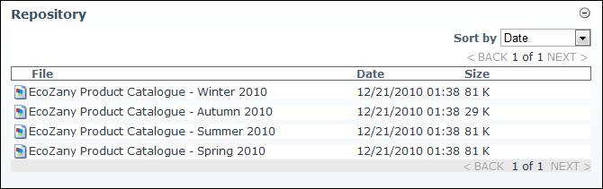

By applying the File List skin, the Repository module can be used to display a compact list of files. Each listing displays the file name, the date and time when the file was last updated, and the file size. A link to download the file is displayed to users in the download role.
Ratings, comments and categories are not enabled on this skin. Sorting is enabled.

The File List Repository